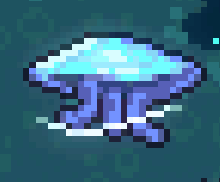
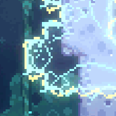
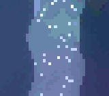
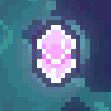
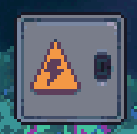

Millimallikas, mis annab mängijale langevarju laadse kukkumise, kui ta haarab seda.. Kui mängija lendab millimallika sisse hooga ja siis haarab, säilitab mängija oma hoo ja laseb tal liugelda kaugemale.
Peatükk 9 jõuab Madeline oma loo lõppu, kus ta peab saama jagu oma raskeimast väljakutsest, kellegile hüvastijätta.

Millimallikas, mis annab mängijale langevarju laadse kukkumise, kui ta haarab seda.. Kui mängija lendab millimallika sisse hooga ja siis haarab, säilitab mängija oma hoo ja laseb tal liugelda kaugemale.

Välk, mis katab kas ala või objekti. Tapab mängija, kui ta puudutab seda, samamoodi kui orad või läga.

Läbipaistev tõke, mis ei lase vaenlastel läbi minna. Mängija jaoks on tõke läbitav.

Lilla versioon sööstu kristallist, mis võimaldab mängijal saada tagasi kaks sööstu laengut. Ainult kasutatav tasemetes, kus mängija saab kasutada kahte sööstu.

Generaator, mis annab energiat tasemes välgule. Ainult leitav peatükki 9 tasemes. Kahe sööstuga saab hävitada generaatori, mis võtab ära välgu, mis takistas mängijat edasi minemisest.